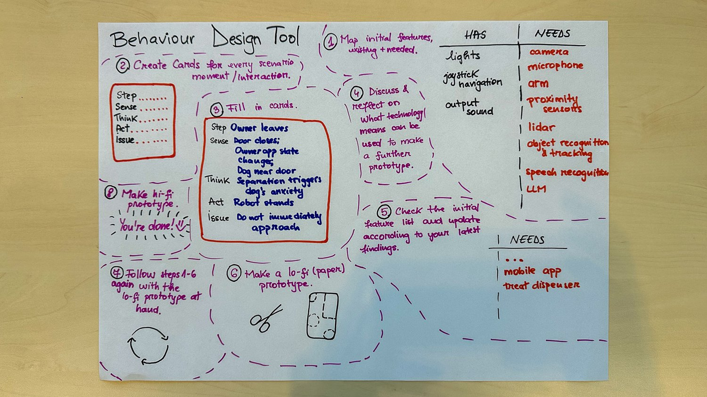
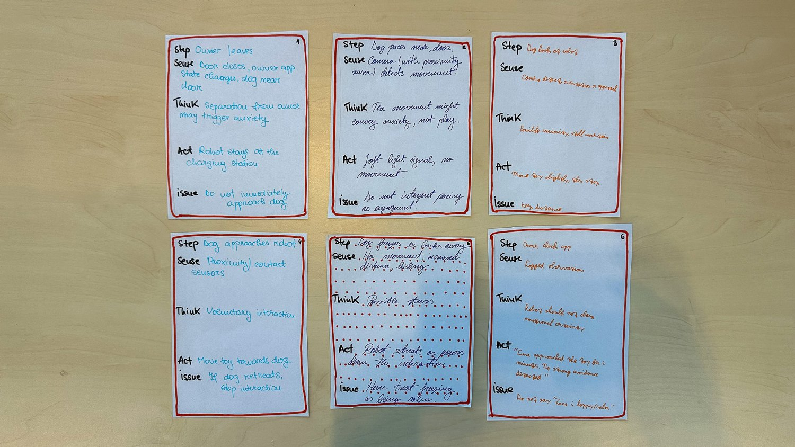

Assignment on behaviour prototyping, cognitive walkthroughs, and design tools.
The tool and the cards below come from the group session with Bianca, Emilia, Gijs and Maurits, applied to our case. The node tree extension further down and the reflections are my own.
During the behaviour session we set up our own Behaviour Design Tool as an eight step process (Figure 1). It starts with mapping the robot's features in two columns, what Alan has (lights, joystick navigation, output sound) and what it needs for the case (camera, microphone, proximity sensors, lidar, object recognition and tracking, speech recognition, an LLM, a mobile app and the treat dispenser). Then you create a card for every scenario moment with five fields: Step, Sense, Think, Act and Issue. After filling them in you discuss which technology could realistically make each card work, update the feature list with what you found, and the last steps loop the whole thing towards a lo-fi paper prototype and eventually a hi-fi one.
The structure does something sneaky but useful: you cannot write an Act without first writing a Sense and a Think, so every behaviour is forced through the sense-think-act cycle, and the Issue field forces you to write down the constraint or failure mode of that moment before moving on.

Figure 1: The Behaviour Design Tool from the session: feature mapping (has and needs), Step, Sense, Think, Act, Issue cards per scenario moment, and the loop towards a lo-fi and hi-fi prototype.
We filled in six cards for the case, covering the sequence from the owner leaving to the owner checking the app afterwards (Figure 2). Card 1: the owner leaves, the robot senses the door closing and the owner app state changing, thinks separation may trigger anxiety, and stays at the charging station, with the issue: do not immediately approach the dog. From there the cards follow the dog: pacing near the door (soft light signal, no movement, do not interpret pacing as engagement), looking at the robot (move the toy slightly, then stop, keep distance), approaching (move the toy towards the dog, and if the dog retreats, stop the interaction), freezing or backing away (the robot retreats or pauses, never treat freezing as being calm), and finally the owner checking the app, where the robot reports observations like "Luna approached the toy for 2 minutes, no strong avoidance detected" with the issue: do not say "Luna is happy/calm".
The Issue fields are the interesting part, they are behaviour constraints for Alan written down as rules. Two of them connect directly to other parts of this portfolio: never treating freezing as calm is exactly the failure from our dark scenario, and the robot not claiming emotional certainty in the app is the false reassurance problem from my ethics page.

Figure 2: The six filled in cards for our case, from the owner leaving to the owner checking the app.
A tool I prefer when prototyping robot behaviour and which has been helpful throughout this and other courses is the Cognitive Walkthrough. Traditionally used for graphical interfaces, it can be modified for social robots to allow designers to go through the Sense-Think-Act cycle before actually developing any software. Research like Rosenthal et al shows that using cognitive walkthroughs for robot behaviour makes sure users correctly interpret the robot’s dialogue. Using lo-fi methods early helps create functionality without the full burden of creating full autonomy.
My suggestion for a design tool is a walkthrough node tree, which maps the physical and social interaction using a node tree grid, like the Touch Designer software we used during the expression lecture. The node tree visualizes the interaction step-by-step. Where each node represents a specific state with properties like: Trigger, Input, Action and more. Applying this to a previous case I used of the NAO robot reminding students to clean up in DesignLab:
The initial lo-fi tool would use multi-colour post it notes on a big A2 paper, which would allow designers to simply draw lines in between the nodes to create connections.
To be transparent: this node tree stayed a paper idea, I never ran it as a Wizard of Oz test. Looking at Figure 2 though, the card sequence from the session is basically this node tree in card form, every card is a node with sense, think and act properties, the Issue field is the constraint on the node, and laid out in order they form the walkthrough.
Using node trees is not a novice thought in software design; Blender, Touch Designer and many more use node trees to visualize interactions and connections. Moving from a paper-based node tree to mid-fi software is a logical next step. For basic scripted behaviours, designers can recreate their paper nodes directly in visual programming environments like Choregraphe or MyRobotLab. For more complex interactions, an architecture like ROS (Robot Operating System) is utilized to manage the messaging between the robot's vision sensors and its actuators.
Transitioning to LLMs will help move away from the predefined and rigid script to more dynamic interactions. Iolanda Leite described it well during her presentation about the paper: Toward Autonomous Social Robots in the Wild, you cannot define every interaction the robot would have as an individual or even as a team, the range is too broad and this gap can be filled with the power of LLMs. This would mean that an API would also have to move the servos, the model would have to output action commands along with dialogue. Software could read these commands and trigger the necessary movements.
Being honest about where this got to: steps 6 to 8 of the tool, the lo-fi prototype and the iteration rounds, were not executed during the course, and neither the card sequence nor my node tree got a Wizard of Oz test. The closest this way of thinking got to being tested is indirect, through the group assignment: PAT runs every scene on a trigger, a response and stop conditions, the same decomposition as these cards, and those enacted behaviours did get tested at DesignLab. Looking back, the Issue fields here read like early versions of what the PAT robot and dog cards later formalise.
Did the tool give a better result? Yes, in the form of written down behaviour constraints for Alan that did not exist before the session: do not immediately approach, do not interpret pacing as engagement, stop when the dog retreats, never treat freezing as calm, and do not claim emotional certainty towards the owner. Those all come straight from the Issue fields in Figure 2.
Is the tool itself good? The card structure is the strength, it forces the sense-think-act honesty per moment and the feature mapping keeps the behaviour buildable instead of magical. The weakness is that the loop is the whole point of the tool, design, prototype, run it again, and the loop is exactly the part we never reached. So I can only say the tool works up to the card stage, the rest is untested.
[1] Rosenthal, Stephanie & Veloso, Manuela. (2009). How Robots' Questions Affect the Accuracy of the Human Responses. Proceedings - IEEE International Workshop on Robot and Human Interactive Communication. 1137 - 1142. 10.1109/ROMAN.2009.5326291.
[2] Winkle, K., Senft, E., & Lemaignan, S. (2021). LEADOR: A Method for End-To-End Participatory Design of Autonomous Social Robots. Frontiers in Robotics and AI, 8. https://doi.org/10.3389/frobt.2021.704119
[3] Leite, I. Toward Autonomous Social Robots in the Wild [Video]. YouTube. https://www.youtube.com/watch?v=LDwlrj7CvWw